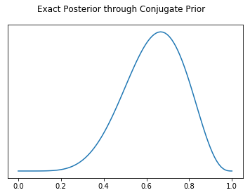
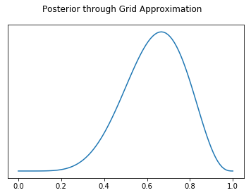
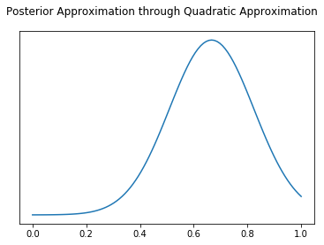
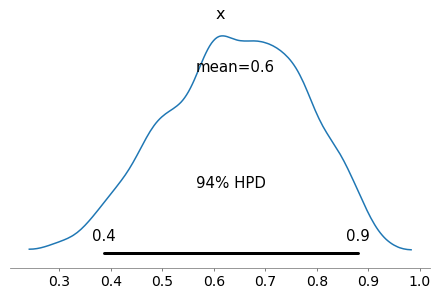
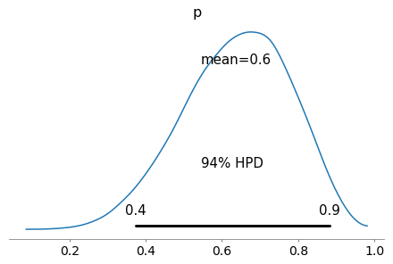
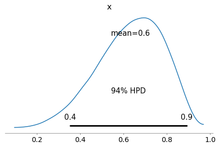

Bayesian Inference Cheatsheet
Feb 07, 2019
Note: This cheatsheet is in "beta". Suggestions are welcome
When performing Bayesian Inference, there are numerous ways to solve, or approximate, a posterior distribution. Usually an author of a book or tutorial will choose one, or they will present both but many chapters apart. This notebook solves the same problem each way all in Python. References are provided for each method for further exploration as well.
Another great reference
Chapter 8 of Osvaldo Martin's book contains a more in depth overview of the methods below. I highly recommend reading it as well, particularly if you would like a deeper understanding of each method.
from scipy import stats
import numpy as np
import pandas as pd
import matplotlib.pyplot as plt
import pymc3 as pm
import pystan
import arviz as az
WARNING (theano.configdefaults): install mkl with `conda install mkl-service`: No module named 'mkl'
WARNING (theano.tensor.blas): Using NumPy C-API based implementation for BLAS functions.
The problem
What is the proportion of water on the globe, given measurements of random tosses? This question is taken from Richard McElreath's books and his lecture. Professor McElreath explains the problem in his lecture or alternatively I have a short write in my Bayesian Glossary
Problem definition in Python
Usually this is done with numpy arrays, where water and land is encoded with 0 and 1 for success. I'm doing it here in two steps to highlight that the ones and zeros just stand for success and failure
observations = pd.Series(["w", "l", "w", "w", "w","l","w", "l", "w"])
# Convert to binomial representation
observations_binom = (observations == "w").astype(int).values
observations_binom
array([1, 0, 1, 1, 1, 0, 1, 0, 1])
water_observations = sum(observations_binom)
total_observations = len(observations_binom)
water_observations, total_observations
(6, 9)
Inference Methods
There are multiple ways of doing inference, even more than the ones here. For each method there is an example, reference links, and short list of pros and cons.
Conjugate Prior
Conjugate priors are the "original" way of solving Bayes rule. Conjugate priors are analytical solutions, meaning that a good (probably great) mathematician was able to create a closed form solution by hand. For our Beta Binominal water tossing problem we can use a formula (taken from Wikipedia) and to get the exact solution.
References
https://en.wikipedia.org/wiki/Conjugate_prior
# Analytical Formula magic
_alpha = 1 + water_observations
_beta = 1 + total_observations - water_observations
x = np.linspace(0,1,100)
posterior_conjugate = stats.beta.pdf(x, a=_alpha, b=_beta)
fig, ax = plt.subplots()
plt.plot(x,posterior_conjugate)
ax.set_yticks([])
fig.suptitle("Exact Posterior through Conjugate Prior")
Text(0.5, 0.98, 'Exact Posterior through Conjugate Prior')

posterior_conjugate[40] / posterior_conjugate[70]
0.2931796007669374
Conjugate Prior Pros
- Posterior distribution is exact. It is not a numerical approximation
- The fastest way to perform Bayesian Inference. At least 4 orders of magnitude faster than other methods
- Speed allows for novel applications, such as online updates for posteriors for real time applications
Conjugate Prior Cons
- Requires advanced math skills to derive analytical solution
- Only simple problems have been solved (https://en.wikipedia.org/wiki/Conjugate_prior#Table_of_conjugate_distributions)
Grid Search
Steps
- Generate a grid of points
- Calculate likelihood for each point
- For each beta take another grid of points to get probability
- Calculate likelihood and posterior
References
Statistical Rethinking Chapter 3 contains a great overview of Grid Search
https://xcelab.net/rm/statistical-rethinking/
possible_probabilities = np.linspace(0,1,100)
prior = np.repeat(5,100)
likelihood = stats.binom.pmf(water_observations, total_observations, possible_probabilities)
posterior_unstandardized = likelihood * prior
posterior_grid_search = posterior_unstandardized / sum(posterior_unstandardized)
fig, ax = plt.subplots()
plt.plot(possible_probabilities, posterior_grid_search)
ax.set_yticks([])
fig.suptitle("Posterior through Grid Approximation")
Text(0.5, 0.98, 'Posterior through Grid Approximation')

posterior_grid_search[40] / posterior_grid_search[70]
0.29317960076693733
Grid Search Pros
- Conceptually simple
- Can theoretically be used to solve any problems
Grid Search Cons
- Due to combinatoric explosion ("the curse of dimensionality"), this solution scales very poorly and can take a very long time to solve for non trivial models. The sun will explode before inference is completed on most models
Quadratic (Laplace) Approximation
http://www.sumsar.net/blog/2013/11/easy-laplace-approximation/
https://github.com/pymc-devs/resources/blob/master/Rethinking/Chp_02.ipynb
References
Bayesian Analysis in Python Chapter 8 https://www.packtpub.com/big-data-and-business-intelligence/bayesian-analysis-python-second-edition
with pm.Model() as normal_aproximation:
p = pm.Uniform('p', 0, 1)
w = pm.Binomial('w', n=total_observations, p=p, observed=water_observations)
mean_q = pm.find_MAP()
std_q = ((1/pm.find_hessian(mean_q, vars=[p]))**0.5)[0]
mean_q['p'], std_q
/home/BayesUser/miniconda3/envs/arviz/lib/python3.6/site-packages/pymc3/tuning/starting.py:61: UserWarning: find_MAP should not be used to initialize the NUTS sampler, simply call pymc3.sample() and it will automatically initialize NUTS in a better way.
warnings.warn('find_MAP should not be used to initialize the NUTS sampler, simply call pymc3.sample() and it will automatically initialize NUTS in a better way.')
logp = -1.8075, ||grad|| = 1.5: 100%|██████████| 7/7 [00:00<00:00, 151.39it/s]
(array(0.66666667), array([0.15713484]))
possible_probabilities = np.linspace(0,1,100)
posterior_laplace = stats.norm.pdf(possible_probabilities, mean_q['p'], std_q)
fig, ax = plt.subplots()
ax.set_yticks([])
plt.plot(possible_probabilities, posterior_laplace)
fig.suptitle("Posterior Approximation through Quadratic Approximation")
Text(0.5, 0.98, 'Posterior Approximation through Quadratic Approximation')

posterior_laplace[40] / posterior_laplace[70]
0.255729157826732
Laplace Approximation Pros
- Relatively fast compared to methods such as MCMC or ADVI
Laplace Approximation Cons
- Normal distributions can't approximate everything, for example bimodal or discrete distributions
Markov Chain Monte Carlo
Markov Chain Monte Carlo (MCMC) is a way to numerically approximate a posterior distribution by iteratively sampling from it. I found the visualizations in the link below make it easier to see what this means. The advances in MCMC are coming from advances in samplers. The No U Turn Sampler (NUTS) for example is one of the most widely popular at the moment, since it can "find" good samples more often than older samples such as Metropolis Hastings.
There are many Bayesian libraries in addition to the two shown here.
References
https://twiecki.io/blog/2015/11/10/mcmc-sampling/
http://elevanth.org/blog/2017/11/28/build-a-better-markov-chain/
"Hand built" Metropolis Hastings
This example is adapated from Thomas Wiecki's blog post
samples = 5000
proposal_width = .1
p_accept = .5
# Assume Normal Prior for this example
p_water_current = .5
p_water_prior_normal_mu = .5
p_water_prior_normal_sd = 1
mh_posterior = []
for i in range(samples):
# Proposal Normal distribution
p_water_proposal = stats.norm(p_water_current, proposal_width).rvs()
# Calculate likelihood of each
likelihood_current = stats.binom.pmf(water_observations, total_observations, p_water_current)
likelihood_proposal = stats.binom.pmf(water_observations, total_observations, p_water_proposal)
# Convert likelihoods that evaluate to nans to zero
likelihood_current = np.nan_to_num(likelihood_current)
likelihood_proposal = np.nan_to_num(likelihood_proposal)
# Calculate prior value given proposal and current
prior_current = stats.norm(p_water_prior_normal_mu, p_water_prior_normal_sd).pdf(p_water_current)
prior_proposal = stats.norm(p_water_prior_normal_mu, p_water_prior_normal_sd).pdf(p_water_proposal)
# Calculate posterior probability of current and proposals
p_current = likelihood_current * prior_current
p_proposal = likelihood_proposal * prior_proposal
p_accept = p_proposal / p_current
if np.random.rand() < p_accept:
p_water_current = p_water_proposal
assert p_water_current > 0
mh_posterior.append(p_water_current)
mh_posterior= np.asarray(mh_posterior)
az.plot_posterior(mh_posterior)
array([<matplotlib.axes._subplots.AxesSubplot object at 0x7fac4c4cf5f8>],
dtype=object)

np.asarray(mh_posterior)
array([0.6391594 , 0.53115708, 0.55828625, ..., 0.54408089, 0.57741335,
0.5757483 ])
Estimate local probability
Because MCMC provides samples and not an exact distribution, we have to take a ratio of counts, not a ratio of areas as before
def estimate_prob_ratio_from_samples(mcmc_posterior, prob_1=possible_probabilities[40],
prob_2=possible_probabilities[70], width=.01):
# We need to compare the same interval in the distribution as we did above
# In the above case x[20] is .01 wide centered at
num_samples_1 = np.sum(np.isclose(prob_1, mcmc_posterior, rtol=0, atol=width))
num_samples_2 = np.sum(np.isclose(prob_2, mcmc_posterior, rtol=0, atol=width))
return num_samples_1 / num_samples_2
estimate_prob_ratio_from_samples(mh_posterior)
0.28214285714285714
PyMC3 MCMC Hamiltonian Monte Carlo (Specifically No U Turn Sampler)
Probabilistic Programming languages simplify Bayesian modeling tremendously but letting letting the statistician focus on the model, and less so on the sampler or other implementation details. From a s
with pm.Model() as mcmc_nuts:
p_water = pm.Uniform("p", 0 ,1)
w = pm.Binomial("w", p=p_water, n=total_observations, observed=water_observations)
trace = pm.sample(50000, chains=2)
az.plot_posterior(trace)
Auto-assigning NUTS sampler...
INFO:pymc3:Auto-assigning NUTS sampler...
Initializing NUTS using jitter+adapt_diag...
INFO:pymc3:Initializing NUTS using jitter+adapt_diag...
Multiprocess sampling (2 chains in 4 jobs)
INFO:pymc3:Multiprocess sampling (2 chains in 4 jobs)
NUTS: [p]
INFO:pymc3:NUTS: [p]
Sampling 2 chains: 100%|██████████| 101000/101000 [00:16<00:00, 6234.09draws/s]
/home/BayesUser/repos/arviz/arviz/data/io_pymc3.py:56: FutureWarning: arrays to stack must be passed as a "sequence" type such as list or tuple. Support for non-sequence iterables such as generators is deprecated as of NumPy 1.16 and will raise an error in the future.
chain_likelihoods.append(np.stack(log_like))
array([<matplotlib.axes._subplots.AxesSubplot object at 0x7fac48a8b6d8>],
dtype=object)

pymc3_samples = trace.get_values("p")
estimate_prob_ratio_from_samples(pymc3_samples)
0.3025787965616046
Stan MCMC Hamiltonian Monte Carlo (Specifically No U Turn Sampler)
We can fit the same model in pystan as well, in this case pystan, which is a python interface to Stan.
water_code = """
data {
int<lower=0> water_observations; // number of water observations
int<lower=0> number_of_tosses; // number of globe tosses
}
parameters {
real p_water; // Proportion of water on globe
}
model {
p_water~uniform(0.0,1.0);
water_observations ~ binomial(number_of_tosses, p_water);
}
"""
water_dat = {'water_observations': 6,
'number_of_tosses': 9}
sm = pystan.StanModel(model_code=water_code)
INFO:pystan:COMPILING THE C++ CODE FOR MODEL anon_model_dedfcbf67db9d2d5064f58308236c51b NOW.
fit = sm.sampling(data=water_dat, iter=50000, chains=4)
WARNING:pystan:2776 of 100000 iterations ended with a divergence (2.78 %).
WARNING:pystan:Try running with adapt_delta larger than 0.8 to remove the divergences.
stan_samples = fit["p_water"]
estimate_prob_ratio_from_samples(stan_samples)
0.29606625258799174
Markov Monte Carlo Chain Pros
- MCMC seems to be most popular method at time of writing
- Popular libraries such as Stan, PyMC3, emcee, Pyro, use MCMC as main inference engine
Markov Monte Carlo Chain Cons
- Sampling is not very computationally efficient. Advanced samplers such as NUTS help but MCMC still can take a while
- MCMC is sensitive to model parametrizations. An example of this is hierarchical funnels. (Read Michael Betancourt's great blog post explaining the issue)[https://mc-stan.org/users/documentation/case-studies/divergences_and_bias.html]
- Although mostly "magic" MCMC st
PyMC3 Variational Inference (Specifically Automatic Differentiation Variational Inference)
In short Variational Inference iteratively transforms a model into an unconstrained space, then tries to optimize the Kullback-Leibler divergence.
References
https://www.cs.toronto.edu/~duvenaud/papers/blackbox.pdf
https://arxiv.org/pdf/1601.00670.pdf
A great explanation of the exact steps can be found at the bottom of page 3 in the paper below.
http://www.jmlr.org/papers/volume18/16-107/16-107.pdf
with pm.Model() as advi:
p_water = pm.Uniform("p", 0 ,1)
w = pm.Binomial("w", p=p_water, n=total_observations, observed=water_observations)
mean_field = pm.fit(method='advi', n=50000)
advi_samples = mean_field.sample(50000).get_values("p")
az.plot_posterior(advi_samples)
Average Loss = 2.3092: 100%|██████████| 50000/50000 [00:10<00:00, 4553.81it/s]
Finished [100%]: Average Loss = 2.3102
INFO:pymc3.variational.inference:Finished [100%]: Average Loss = 2.3102
array([<matplotlib.axes._subplots.AxesSubplot object at 0x7fac3dfb98d0>],
dtype=object)

estimate_prob_ratio_from_samples(advi_samples)
0.358148893360161
Variational Inference Pros
- No sampling required (unlike MCMC)
- Able to handle complex models
- Scales to large amounts of data better than MCMC
- Faster than MCMC
Variational Inference Cons
- Not guaranteed to reach "optimal" KL Divergence
- The true posterior may not be well approximated by any distribution in the chosen class
Other Inference Methods
There are other Bayesian methods that I frankly don't know enough about to write a full treatment here. I will list the ones I do know about however.
Approximate Bayesian Computing
Agustina Arroyuelo has a great write up for Google Summer of Code 2018.
https://agustinaarroyuelo.github.io/jekyll/update/2018/05/29/PyMC3's-Journal-Club.html
Acknowledgements'
- Austin Rochford (twitter: @AustinRochford)
- George Ho (twitter: @_eigenfoo)
- Neal Fultz (LinkedIn: https://www.linkedin.com/in/nfultz/)